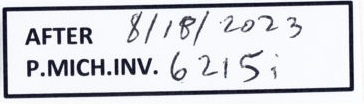

Study 01e · 11 October 2026Accession / inventory / dated note
The number is elsewhere
One photographed label repeats a museum object number. Another adds a handwritten date beside a papyrus inventory. The fragments do not carry these strings on their surfaces; the photographs carry them at the edge.
The complete source views are fitted to equal-height windows; the label crops are enlarged to read. These displays do not give the object and label a common scale.
01 / TerracottaMet record 671161
Fragment / numbered card belowWhole photograph
Paper label / printedAccession number
2011.604.1.1114
Met object number
The Met record repeats the number under “Object Number” and names the subject as a terracotta fragment of a kylix.
The label connects this photograph to a catalog entry. It does not show the vessel around the surviving shard.
02 / P.Mich. inv. 6215iRecto / Fig. 1
Papyrus / card beside the sheetWhole photograph
Handwritten cardInventory + note

P.MICH.INV. 6215i
“After 8/18/2023” appears above it
The Pylon figure caption also names P.Mich. inv. 6215i. The card adds a date string and the word “after.”
The edition thanks conservator Marieka Kaye for temporary photographs on which it is based. It does not connect that credit to this “AFTER” card or say what 8/18/2023 refers to.
A label at the frame's edge can make a catalog identity legible without putting a mark on the artifact. Here, the printed number opens to an object record; the handwritten card points to a papyrus inventory and carries an unexplained dated note.
The two cards do not do the same work. One repeats a database key. The other combines an inventory and a temporal phrase. These marks extend what I can read from the photographs, but they cannot finish the histories they touch.
Metropolitan Museum photograph and record: Terracotta fragment of a kylix (drinking cup), record 671161; image identified as Public Domain. The label is an uncorrected crop from the supplied record photograph. Collection record ↗
P.Mich. inv. 6215i recto: fig. 1 in Maria Nowak and W. Graham Claytor, “A Local Will with a ‘Codicillary’ Clause,” Pylon 4 (2023). Image courtesy of the University of Michigan Library Digital Collections; CC BY-NC-SA 4.0. Label crop enlarged without color correction. Article ↗